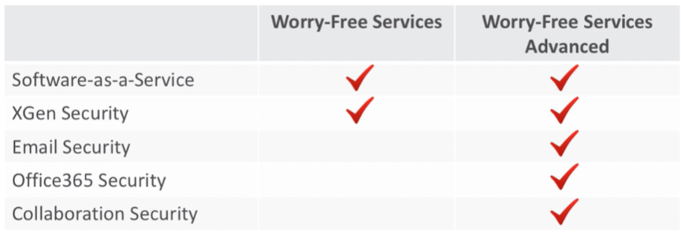

Management server installed in a costumer environment and a Agent that is installed in any device that should be protected
Worry-Free Services:
- Cloud-based Endpoint Security:
Management console in the cloud, agent on the endpoint
- Maintained by Trend Micro
- No servers Required (no configurate server)
- Do not need to install an OS
- Never install patch, upgrade
- Console acess from a browser
- The devices are protected no matter where they are
Multi Plataform support:
- Windows
- Mac
-IOS
- Android
(Mobile device)
Comprehensive Protection(endpoint)
- Protects against Malware, Ransow.., Viruses, Spyware, Bots, Trojans and other threats
- Firewall
-URL Filtering (category filtering)
- Web Reputation
- Device Control (usb)
- Behavior Monitoring
Other features:
- Active Directory Support
-Supports up to 10,000 devices
-Multiple Admins
-Trend Micro Control Manager Integration (CENTRALIZE LOG)

wORRY-fREE sERVICES: It is for endpoints and mobile devices
Worry-Free Services: Endpoint + Email
Hosted Email Security:

- Cloud-based email gateway(Scan Email)
- Supports on-site mail servers and hosted emails
- Filters both Inbound and Outbound email
- Blocks ransomware, phishing, targeted attacks,spam, malware and more
- Includes Cloud Sandbox and Email Encryption(against unknow threats)
-Money backed SLA
Cloud App Security
- Against Office 365 threats.
- Direct cloud-to-cloud integration with zero impact to Office 365
- Protects cloud file sharing
- Not install any software and use API

New features:
- Machine Learning:
Algorithms that an unknown file is good or bad. or detect malware.
Models are constantly trained and learn from good and bad file data to maintain their accuracy
High fidelity Machine Learning:
2 types of machine learning:
- Pre-execution Machine Learning:
Analyse the file based what it is look(File size, name, hash)
Only uses a single technique some times the threat is escondido no arquivo e fica invisivel para a pre-execução
- Runtime Machine Learning:
Look what the file does, the behavior of the file during the execution
Census and Whitelist Checking Reduces false positives

Clica no 7 para ver os logs da detecção

Do lado esquerdo a probabilidade de ser um threat


Application Control:
Input a file or folder prevent the execution of those programs
Aqui ele bloqueou o Firefox:

Bitlocker(Encryption) Management:
Windows: Bitlocker - Microsoft product
Support to Mac??